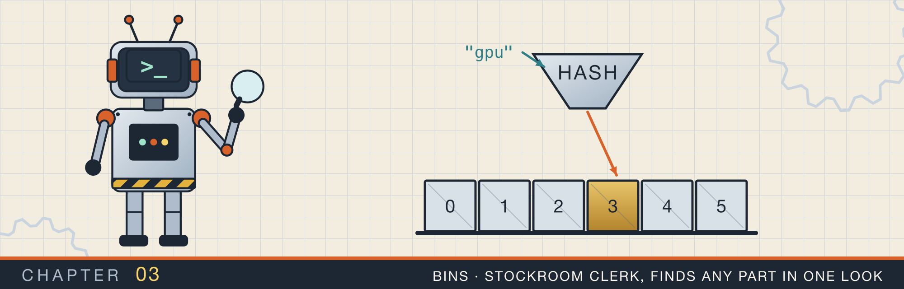
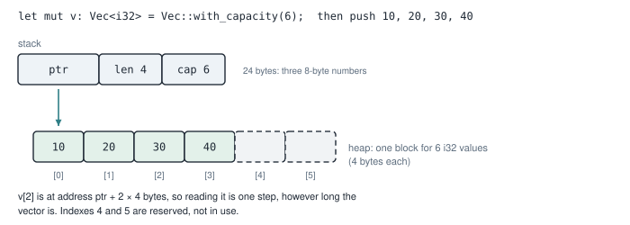
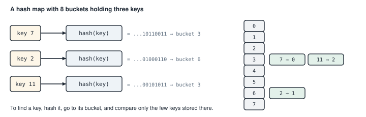
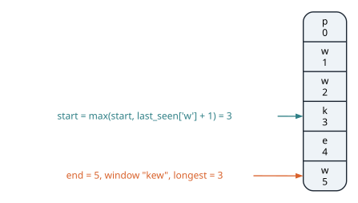
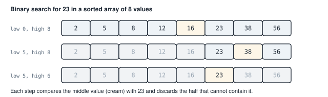
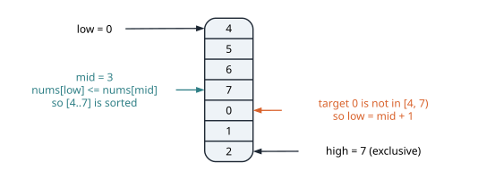
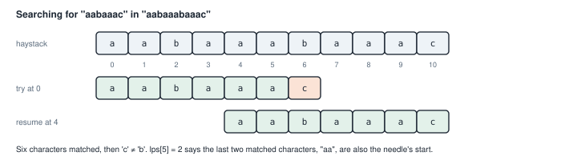

Vectors, strings, and hash maps
This chapter covers
- Quantifying algorithmic work using Big-O notation
- Memory layouts of
Vec,String, andHashMap - Finding matching pairs in linear time with a hash map
- Using a vector as a stack to validate brackets and track a running minimum
- Traversing arrays with two indexes: in-place reversal, sliding windows, and interval merging
- Binary search on rotated arrays, in-place matrix rotation, and linear-time substring matching
Algorithmic efficiency depends jointly on asymptotic operation counts and the physical memory layout of the underlying data structures. Rust’s three foundational standard collections (Vec, String, and HashMap) provide contiguous array storage, UTF-8-validated byte buffers, and open-addressed hash tables with predictable performance contracts.
The opening sections establish two prerequisites: asymptotic Big-O complexity notation for comparing scaling behavior, and the stack-versus-heap memory layout of each collection. With these cost models explicit, the subsequent algorithms remain concise while making their time and space bounds transparent.
The implementations are organized by reusable algorithmic paradigm rather than by surface domain. Table 3.1 maps each section to its underlying technique and target problems.
| Section | Technique | Problems |
|---|---|---|
| 3.5 | look things up in a hash map | find two numbers that add up to a target |
| 3.6 | a vector used as a stack | check brackets; a stack that knows its minimum |
| 3.7 | two indexes moving toward each other | reverse a string; find three numbers that add to zero |
| 3.8 | a window that slides along a string | longest piece of text with no repeated letter |
| 3.9 | sort, then walk once | merge overlapping ranges |
| 3.10 | halve the search each step | binary search in a rotated array |
| 3.11 | transform in place | rotate a square grid |
| 3.12 | reuse what you already matched | find text inside other text |
3.1 Counting the work an algorithm does
Two implementations can compute identical outputs while differing by orders of magnitude in execution time. Selecting between competing designs requires a formal notation characterizing how work scales with input size.
Algorithmic work is quantified by counting elementary constant-time operations (such as comparisons, arithmetic instructions, or array accesses) as a function of input size n, where n typically denotes the length of an array or string. Consider three operations on an array of n integers:
- Reading the first element requires 1 operation, independent of
n. - Summing every element requires
noperations, one per entry. - Comparing every element against every other element requires roughly
n × noperations.
Big-O notation expresses asymptotic growth by retaining only the dominant term and dropping constant multipliers. The three operations above are written O(1), O(n), and O(n²), where O(n) (“order n”) indicates runtime growing linearly with n.
Table 3.2 illustrates how sharply these complexity classes diverge at scale.
| n | O(1) | O(log n) | O(n) | O(n log n) | O(n²) |
|---|---|---|---|---|---|
| 10 | 1 | about 3 | 10 | about 33 | 100 |
| 1,000 | 1 | about 10 | 1,000 | about 10,000 | 1,000,000 |
| 1,000,000 | 1 | about 20 | 1,000,000 | about 20,000,000 | 1,000,000,000,000 |
A modern processor executes on the order of one billion simple operations per second. At one million elements, an O(n) algorithm completes in roughly a millisecond, whereas an O(n²) algorithm requires on the order of fifteen minutes.
The same notation characterizes auxiliary memory consumption. An O(n)-space algorithm allocates storage proportional to the input size, whereas an O(1)-space algorithm uses a fixed amount of extra memory regardless of n.
NOTE: O(log n) arises whenever each step discards half of the remaining search space. Halving one million elements reduces the range to a single element in roughly 20 steps, since 220 ≈ 1,048,576. Section 3.10 applies this property to binary search.
3.2 How a Vec stores its elements
A Vec<T> is a dynamically resizable, contiguous array. Its elements occupy adjacent addresses in a single heap allocation. On the stack, the Vec header stores three machine words: a pointer to the heap buffer, the count of initialized elements (length), and the total number of elements the current allocation can hold (capacity). Figure 3.1 depicts a vector of four i32 values backed by a six-slot allocation.

Vec<i32> with length 4 and capacity 6. The elements are next to each other, so the address of any element can be computed from its index.Contiguous storage makes indexing O(1): the address of v[i] is computed directly as base_ptr + i * size_of::<T>(), independent of the vector’s length.
When push is called on a full vector (len == cap), the vector must reallocate a larger heap block, as illustrated in Figure 3.2.

Although an individual reallocation copies n elements in O(n) time, doubling capacity on each growth ensures reallocations occur infrequently. Averaged across any sequence of pushes, each push performs constant work, a guarantee termed amortized O(1).
When the final element count is known ahead of time, Vec::with_capacity(n) reserves the full heap block upfront, eliminating intermediate reallocations altogether.
WARNING: Because push may reallocate and move every element to a new heap address, holding an element reference such as &v[0] across a v.push(...) would create a dangling pointer. Rust’s borrow checker rejects such code at compile time.
3.3 How a String stores text
A String wraps a Vec<u8> with one additional invariant: its byte sequence must always be valid UTF-8. UTF-8 is a variable-width character encoding in which ASCII characters occupy 1 byte while other Unicode scalar values occupy 2, 3, or 4 bytes. Figure 3.3 illustrates the byte representation of "café".

"café" has four characters and five bytes. The letter é takes two bytes.This variable-width encoding has three direct consequences in Rust:
s.len()returns the byte length rather than the character count ("café".len()equals 5).s.chars()decodes and yields Unicode scalar values sequentially from the underlying bytes.- Integer indexing (
s[3]) is forbidden at compile time because an arbitrary byte offset can land in the middle of a multi-byte character (such as byte index 4 in Figure 3.3).
3.4 How a HashMap finds a key
A HashMap<K, V> maps keys to values with O(1) expected lookup time through three steps (Figure 3.4):
- A hash function deterministically maps the key to a 64-bit integer.
- Selected bits of that hash index into a bucket within an internal table.
- The map inserts or locates the key-value pair starting from that bucket.

Distinct keys can hash to the same bucket (a collision), as keys 7 and 11 do in Figure 3.4, requiring key equality checks to resolve the entry. By resizing the table whenever its load factor exceeds a fixed threshold, HashMap keeps probe chains short, maintaining O(1) expected time for insert and get.
By default, Rust’s HashMap initializes its hasher with a per-process random seed to prevent algorithmic-complexity (HashDoS) attacks crafted to collide in a single bucket. As a consequence, iteration order over a HashMap is non-deterministic across executions.
With asymptotic analysis and collection memory layouts established, the following sections develop eight canonical algorithms, contrasting baseline designs against collection-accelerated implementations.
3.5 Finding two numbers that add up to a target
The problem. Given a slice of integers and a target sum, return two distinct indexes whose elements sum to the target. For [2, 7, 11, 15] and target 9, the result is (0, 1), since 2 + 7 = 9.
The baseline approach. Testing every pair (i, j) with i < j examines roughly n(n - 1) / 2 pairs, yielding O(n²) time.
The hash-map approach. Scanning the slice once, each element num requires a known complement target - num. Storing previously visited values and their indexes in a HashMap reduces the complement query to an O(1) lookup.
Tracing [2, 7, 11, 15] with target 9:
| Position | Number | Partner needed | In the map? | Map afterward |
|---|---|---|---|---|
| 0 | 2 | 7 | no | {2: 0} |
| 1 | 7 | 2 | yes, at position 0 | answer: (0, 1) |
Listing 3.1 Two Sum with one pass and a hash map. src/problems/two_sum.rs
//! Two Sum: find the pair of indices whose values add up to a target.
//!
//! Use a `HashMap` for one pass: O(n) time, O(n) space.
use std::collections::HashMap;
pub fn two_sum(nums: &[i32], target: i32) -> Option<(usize, usize)> {
let mut seen = HashMap::with_capacity(nums.len());
for (idx, &num) in nums.iter().enumerate() {
match seen.get(&(target - num)) {
Some(&prev) => return Some((prev, idx)),
None => {
seen.insert(num, idx);
}
}
}
None
}
#[cfg(test)]
mod tests {
use super::*;
#[test]
fn finds_pair() {
let nums = [2, 7, 11, 15];
assert_eq!(two_sum(&nums, 9), Some((0, 1)));
}
#[test]
fn returns_none_when_missing() {
assert_eq!(two_sum(&[1, 2, 3], 100), None);
}
}Key details of the implementation:
- The parameter
nums: &[i32]is a slice, a borrowed view over contiguousi32elements compatible with arrays, vectors, and subslices. HashMap::with_capacity(nums.len())preallocates enough buckets to avoid rehashing during the scan.nums.iter().enumerate()yields(usize, &i32)pairs, and the pattern(idx, &num)copies thei32out of its reference.seen.get(&(target - num))probes for the complement by reference.- When the complement exists, the function returns both indexes immediately; otherwise, it inserts
(num, idx).
Performing the lookup before the insertion prevents an element from pairing with itself: for target 4 and [2], inserting before looking up would erroneously return (0, 0).
The function returns Option<(usize, usize)>, running in O(n) expected time and O(n) auxiliary space.
WARNING: Computing target - num in i32 can overflow near the bounds of i32 (for example, when num == i32::MIN and target > 0), causing a panic in debug builds. Widening to i64 or calling target.checked_sub(num) eliminates overflow.
3.6 A vector used as a stack
A stack is a last-in, first-out (LIFO) sequence where insertions and removals occur exclusively at one end (the top). Vec serves directly as a stack: push appends to the top, pop removes and returns the top element, and last inspects the top without mutating the vector. All three operations run in amortized O(1) time.
3.6.1 Checking brackets
The problem. A bracket string is balanced if every opening delimiter is closed by the matching delimiter type in proper nested order. "{[()]}" is valid, whereas "([)]" is invalid because ] closes while ( remains open.
The strategy. Scan left to right, pushing every opening bracket onto a stack. Upon encountering a closing bracket, pop the top of the stack and verify that it matches the expected opener. After the scan completes, the stack must be empty. Figure 3.5 traces "{[()]}".
![Six steps: push {, push [, push (, then ) pops (, ] pops [, } pops {, leaving the stack empty](figures/ch03-stack.svg)
"{[()]}". Each closing bracket pops the opener on top, which must be its partner.) pops [, so the check fails.Listing 3.2 Valid Parentheses. src/problems/valid_parentheses.rs
//! Valid Parentheses: classic stack problem with idiomatic pattern matching.
//!
pub fn is_valid(s: &str) -> bool {
use std::collections::HashMap;
let mut stack = Vec::with_capacity(s.len());
// Maps each closing delimiter to the opening delimiter it must match.
let expected = HashMap::from([(')', '('), ('}', '{'), (']', '[')]);
for ch in s.chars() {
match ch {
'(' | '[' | '{' => stack.push(ch),
// Every other character, including one outside the six delimiters,
// must close the top of the stack.
_ => {
if stack.pop().as_ref() != expected.get(&ch) {
return false;
}
}
}
}
stack.is_empty()
}
#[cfg(test)]
mod tests {
use super::*;
#[test]
fn valid_cases() {
assert!(is_valid("()"));
assert!(is_valid("()[]{}"));
assert!(is_valid("{[()]}"));
}
#[test]
fn invalid_cases() {
assert!(!is_valid("(]"));
assert!(!is_valid("([)]"));
assert!(!is_valid("("));
assert!(!is_valid(")"));
assert!(!is_valid("(("));
}
}The lookup table expected, constructed via HashMap::from([...]), maps each closing bracket to its required opener.
The match expression partitions characters into two arms: the first pushes opening brackets, and the second compares two Option<&char> values:
stack.pop().as_ref()pops the top opener and convertsOption<char>toOption<&char>so both sides share the same type.expected.get(&ch)returnsSome(&opener)for any closing bracket.
Any mismatch returns false immediately, including an extra closing bracket on an empty stack (None != Some(...)). After the loop finishes, stack.is_empty() rejects any unclosed openers. The unit tests cover balanced inputs, interleaved mismatches ("([)]"), lone closers (")"), and unclosed openers ("((").
WARNING: If a non-bracket character arrives while the stack is empty, both stack.pop().as_ref() and expected.get(&ch) evaluate to None, causing is_valid("a") to return true. Production validators that may encounter arbitrary characters should match non-brackets in a dedicated arm to skip or reject them explicitly.
3.6.2 A stack that knows its minimum
The problem. Design a stack supporting push, pop, top, and get_min (returning the current minimum element), each in O(1) time.
The strategy. Scanning the stack on every get_min call costs O(n). Maintaining a parallel auxiliary stack (mins) that records the running minimum at each depth makes get_min an O(1) lookup: every push appends the updated minimum to mins, and every pop pops both stacks in lockstep.
Tracing pushes of -2, 0, and -3 followed by a pop:
| Operation | values | mins | get_min() |
|---|---|---|---|
| push -2 | [-2] | [-2] | -2 |
| push 0 | [-2, 0] | [-2, -2] | -2 |
| push -3 | [-2, 0, -3] | [-2, -2, -3] | -3 |
| pop | [-2, 0] | [-2, -2] | -2 |
Listing 3.3 Min Stack with a parallel stack of minimums. src/problems/min_stack.rs
//! Min Stack: O(1) push, pop, top, and get_min.
//!
//! We keep a parallel `mins` stack. Each push stores the current minimum at that
//! point in history, so pop is symmetric.
#[derive(Debug, Default)]
pub struct MinStack {
values: Vec<i32>,
mins: Vec<i32>,
}
impl MinStack {
pub fn new() -> Self {
Self::default()
}
pub fn push(&mut self, val: i32) {
match self.mins.last() {
Some(&min) if min <= val => self.mins.push(min),
_ => self.mins.push(val),
}
self.values.push(val);
}
pub fn pop(&mut self) -> Option<i32> {
self.mins.pop();
self.values.pop()
}
pub fn top(&self) -> Option<i32> {
self.values.last().copied()
}
pub fn get_min(&self) -> Option<i32> {
self.mins.last().copied()
}
}
#[cfg(test)]
mod tests {
use super::*;
#[test]
fn stack_tracks_minimum() {
let mut stack = MinStack::new();
stack.push(-2);
stack.push(0);
stack.push(-3);
assert_eq!(stack.get_min(), Some(-3));
assert_eq!(stack.pop(), Some(-3));
assert_eq!(stack.top(), Some(0));
assert_eq!(stack.get_min(), Some(-2));
}
#[test]
fn handles_duplicates() {
let mut stack = MinStack::new();
stack.push(1);
stack.push(1);
stack.pop();
assert_eq!(stack.get_min(), Some(1));
}
}#[derive(Default)] synthesizes MinStack::default() with two empty vectors, which new() delegates to.
Inside push, self.mins.last() inspects the current minimum. The match arm Some(&min) if min <= val uses a guard to re-push min when the incoming value is not smaller; the fallback arm _ covers both an empty stack and a new strictly smaller minimum, pushing val.
Using <= rather than < preserves correctness when duplicate minimum values are pushed: popping one copy leaves the second copy reflected on top of mins, a case verified by the handles_duplicates test.
Both top and get_min call .copied() to convert Option<&i32> into Option<i32>, returning owned integers to callers.
3.7 Two indexes moving toward each other
Problems that inspect both ends of a sequence simultaneously can maintain two indexes, start and end, advancing them inward until they cross. Because at least one index advances per iteration, the traversal completes in O(n) time.
3.7.1 Reversing a string in place
The strategy. Swap the first and last bytes, then move inward one position from each end until the two indexes meet (Figure 3.6).

"abcd". Two swaps, then the indexes cross.As noted in Section 3.3, a String must preserve valid UTF-8; reversing individual bytes of a multi-byte character would corrupt the encoding. Consequently, Rust exposes mutable byte access only through String::as_mut_vec, which is marked unsafe. An unsafe block designates code whose memory or type invariants cannot be verified statically by the compiler and must instead be upheld by the author; here, the required invariant is that the buffer remains valid UTF-8 upon exiting the block.
Listing 3.4 The reversing function (lines 1 to 14). src/bin/reverse_string.rs
fn reverse_str(s: &mut String) {
// SAFETY: s._as_mut_vec() is unsafe because it exposes the inner mutability to it's character buffer, and we must ensure
// to leave valid UTF-8. We enforce ASCII only characters.
assert!(s.is_ascii());
let bytes = unsafe { s.as_mut_vec() };
let (mut start, mut end) = (0, bytes.len() - 1);
while start < end {
bytes.swap(start, end);
start += 1;
end -= 1;
}
}The function enforces the UTF-8 invariant upfront via assert!(s.is_ascii()), panicking if any multi-byte character is present. Because every ASCII byte is a self-contained single-byte UTF-8 sequence, any permutation of ASCII bytes remains valid UTF-8, allowing the unsafe block to wrap a single method call.
Inside the loop, bytes.swap(start, end) exchanges the two endpoints while start < end, leaving the center byte of an odd-length string untouched.
Listing 3.5 The complete program, with its tests. src/bin/reverse_string.rs
fn reverse_str(s: &mut String) {
// SAFETY: s._as_mut_vec() is unsafe because it exposes the inner mutability to it's character buffer, and we must ensure
// to leave valid UTF-8. We enforce ASCII only characters.
assert!(s.is_ascii());
let bytes = unsafe { s.as_mut_vec() };
let (mut start, mut end) = (0, bytes.len() - 1);
while start < end {
bytes.swap(start, end);
start += 1;
end -= 1;
}
}
fn main() {
for value in ["abcd", "abc", "a", "rust"] {
let mut s = String::from(value);
reverse_str(&mut s);
println!("{value:>6} -> {s}");
}
}
#[cfg(test)]
mod tests {
use super::*;
#[test]
fn an_even_length_string_is_reversed() {
let mut s = String::from("abcd");
reverse_str(&mut s);
assert_eq!(s, "dcba");
}
#[test]
fn an_odd_length_string_keeps_its_middle_byte() {
let mut s = String::from("abc");
reverse_str(&mut s);
assert_eq!(s, "cba");
}
#[test]
fn a_single_byte_is_unchanged() {
let mut s = String::from("a");
reverse_str(&mut s);
assert_eq!(s, "a");
}
#[test]
fn the_buffer_is_reused() {
let mut s = String::from("abcd");
let capacity = s.capacity();
let address = s.as_ptr();
reverse_str(&mut s);
assert_eq!(s.capacity(), capacity);
assert_eq!(s.as_ptr(), address);
}
#[test]
fn reversing_twice_restores_the_string() {
let mut s = String::from("interview");
reverse_str(&mut s);
reverse_str(&mut s);
assert_eq!(s, "interview");
}
#[test]
#[should_panic]
fn non_ascii_input_panics() {
let mut s = String::from("café");
reverse_str(&mut s);
}
}The unit test the_buffer_is_reused captures the string’s capacity and heap pointer before and after reversal, confirming zero reallocation. non_ascii_input_panics is annotated with #[should_panic] to verify that the ASCII precondition rejects "café".
$ cargo run --bin reverse_string
abcd -> dcba
abc -> cba
a -> a
rust -> tsur
WARNING: On an empty string, bytes.len() - 1 underflows usize, triggering a panic in debug builds. Production implementations must return early when s.is_empty().
3.7.2 Three numbers that add up to a target
The problem. Find every unique triple of integers in an array that sums to a given target, without emitting duplicate triples.
The strategy. Sort the slice in ascending order first. Fix the first element at index i, then search the remaining suffix with two converging indexes: left = i + 1 and right = len - 1. Sorted order determines which pointer must move at each step:
- If the sum is below
target, incrementleftto increase the sum. - If the sum exceeds
target, decrementrightto decrease the sum. - If the sum equals
target, record the triple and advance both indexes past any duplicate values.
Sorting costs O(n log n), and each of the n fixed elements triggers an O(n) two-pointer scan, yielding O(n²) overall time.
The outer setup sorts the slice and iterates over each unique first element:
// Import the variants directly into scope
use std::cmp::Ordering::{Equal, Greater, Less};
pub fn three_sum(numbers: &mut [i32], target: i32) -> Vec<(i32, i32, i32)> {
numbers.sort_unstable();
let mut results = Vec::new();
let target = i64::from(target);
for i in 0..numbers.len() {
// Skip a first value that was already used, so triplets stay unique.
if i > 0 && numbers[i] == numbers[i - 1] {
continue;
}
let (mut left, mut right) = (i + 1, numbers.len().saturating_sub(1));
// ...
}
}- Importing
std::cmp::Ordering::{Equal, Greater, Less}allows concise pattern matching on comparison results. - Skipping
numbers[i] == numbers[i - 1]prevents duplicate triples anchored on the same first element. numbers.len().saturating_sub(1)safely yields0on empty slices without unsigned underflow.
For each fixed index i, the inner loop converges left and right:
pub fn three_sum(numbers: &mut [i32], target: i32) -> Vec<(i32, i32, i32)> {
// ...
for i in 0..numbers.len() {
// ...
while left < right {
// Widen to i64 so the sum of three i32 values cannot overflow.
let current_sum = numbers[i] as i64 + numbers[left] as i64 + numbers[right] as i64;
match current_sum.cmp(&target) {
Less => left += 1,
Greater => right -= 1,
Equal => {
results.push((numbers[i], numbers[left], numbers[right]));
while left < right && numbers[left] == numbers[left + 1] {
left += 1;
}
while left < right && numbers[right] == numbers[right - 1] {
right -= 1;
}
left += 1;
right -= 1;
}
}
}
}
// ...
}- Accumulating the triple sum in
i64prevents signed 32-bit overflow when summing values neari32::MAXori32::MIN, as exercised bydoes_not_overflow_on_extreme_values. - Matching on
current_sum.cmp(&target)mapsLess,Greater, andEqualdirectly to the pointer updates. - After recording a match, two inner
whileloops skip consecutive duplicate values atleftandright.
Listing 3.6 Three Sum, with its tests. src/problems/three_sum.rs
//! Three Sum: every unique triplet of values that adds up to a target.
//!
//! Sort, fix the first value, then close in on the other two with two pointers.
//! Sorts the caller's slice in place: O(n^2) time, no extra space beyond the result.
// Import the variants directly into scope
use std::cmp::Ordering::{Equal, Greater, Less};
pub fn three_sum(numbers: &mut [i32], target: i32) -> Vec<(i32, i32, i32)> {
numbers.sort_unstable();
let mut results = Vec::new();
let target = i64::from(target);
for i in 0..numbers.len() {
// Skip a first value that was already used, so triplets stay unique.
if i > 0 && numbers[i] == numbers[i - 1] {
continue;
}
let (mut left, mut right) = (i + 1, numbers.len().saturating_sub(1));
while left < right {
// Widen to i64 so the sum of three i32 values cannot overflow.
let current_sum = numbers[i] as i64 + numbers[left] as i64 + numbers[right] as i64;
match current_sum.cmp(&target) {
Less => left += 1,
Greater => right -= 1,
Equal => {
results.push((numbers[i], numbers[left], numbers[right]));
while left < right && numbers[left] == numbers[left + 1] {
left += 1;
}
while left < right && numbers[right] == numbers[right - 1] {
right -= 1;
}
left += 1;
right -= 1;
}
}
}
}
results
}
#[cfg(test)]
mod tests {
use super::*;
#[test]
fn finds_all_unique_triplets() {
let result = three_sum(&mut [-1, 0, 1, 2, -1, -4], 0);
assert_eq!(result, vec![(-1, -1, 2), (-1, 0, 1)]);
}
#[test]
fn skips_duplicates_on_every_position() {
assert_eq!(three_sum(&mut [0, 0, 0, 0], 0), vec![(0, 0, 0)]);
assert_eq!(three_sum(&mut [-2, 0, 0, 2, 2], 0), vec![(-2, 0, 2)]);
}
#[test]
fn supports_a_non_zero_target() {
assert_eq!(
three_sum(&mut [1, 2, 3, 4, 5], 9),
vec![(1, 3, 5), (2, 3, 4)]
);
}
#[test]
fn returns_nothing_when_no_triplet_exists() {
assert!(three_sum(&mut [1, 2, 3], 100).is_empty());
assert!(three_sum(&mut [1, 2], 3).is_empty());
assert!(three_sum(&mut [], 0).is_empty());
}
#[test]
fn does_not_overflow_on_extreme_values() {
assert_eq!(
three_sum(&mut [i32::MAX, i32::MAX, i32::MIN], i32::MAX - 1),
vec![(i32::MIN, i32::MAX, i32::MAX)]
);
}
}[-4, -1, -1, 0, 1, 2], one comparison per step. The sign of the sum decides which pointer moves. The repeated -1 at index 2 is skipped.3.8 A window that slides along a string
The problem. Compute the length of the longest contiguous substring containing no repeated characters. For "pwwkew", the maximum length is 3 (corresponding to "wke" or "kew").
The strategy. Maintain a sliding window start..=end invariant to contain exclusively distinct characters. As end advances one character at a time, if the incoming character already lies inside the current window, advance start immediately past its prior occurrence. Recording the maximum window width across all positions yields the answer.
A HashMap<char, usize> maps each seen character to its most recent character index. Figure 3.7 depicts the window state in "pwwkew" when the third w is processed.

end = 5, the w was last seen at index 2. start moves to 3, and the window is "kew".end moves right one character at a time, and start moves only when a repeat inside the window arrives. The run on "abba" shows the case that max handles.Listing 3.7 Longest substring without a repeated character. src/problems/sliding_window.rs
//! Longest substring without repeating characters.
//!
//! Sliding window with `HashMap<char, usize>`; the window start is monotonic.
use std::collections::HashMap;
pub fn length_of_longest_substring(s: &str) -> usize {
let mut last_seen = HashMap::with_capacity(s.len());
let (mut start, mut longest) = (0, 0);
for (end, ch) in s.chars().enumerate() {
if let Some(&previous) = last_seen.get(&ch) {
start = start.max(previous + 1);
}
longest = longest.max(end - start + 1);
last_seen.insert(ch, end);
}
longest
}
#[cfg(test)]
mod tests {
use super::*;
#[test]
fn examples() {
assert_eq!(length_of_longest_substring("abcabcbb"), 3);
assert_eq!(length_of_longest_substring("bbbbb"), 1);
assert_eq!(length_of_longest_substring("pwwkew"), 3);
assert_eq!(length_of_longest_substring(""), 0);
}
}When last_seen.get(&ch) finds an earlier index previous, start = start.max(previous + 1) advances the left boundary without ever moving it backward. The .max(...) guard is essential for inputs like "abba": when the second 'a' arrives at index 3, 'a' was last seen at index 0, which already falls outside the current window starting at index 2.
At each step, end - start + 1 gives the active window length. Because both start and end advance monotonically, the algorithm runs in O(n) time. Iterating via chars().enumerate() counts Unicode scalar values rather than raw UTF-8 bytes, matching the problem specification.
3.9 Sort, then walk once: merging ranges
The problem. Given a list of closed intervals such as [1,3] [2,6] [8,10] [15,18], merge all overlapping intervals into disjoint ranges ([1,6] [8,10] [15,18]).
The strategy. Sort the intervals by their start coordinate, then perform a single linear pass. In sorted order, each interval either overlaps the most recently merged interval (extending its end coordinate) or starts a new disjoint interval (Figure 3.8).

The module implements three variations: one using a named Interval struct, one using raw tuples, and one operating in place. Listing 3.8 presents the Interval struct and the first implementation.
Listing 3.8 Merging ranges held in a struct (lines 6 to 28). src/problems/merge_intervals.rs
#[derive(Debug, PartialEq, Clone, Copy)]
pub struct Interval {
start: i32,
end: i32,
}
pub fn merge_intervals(mut intervals: Vec<Interval>) -> Vec<Interval> {
if intervals.is_empty() {
return intervals;
}
intervals.sort_unstable_by_key(|interval| interval.start);
let mut merged: Vec<Interval> = Vec::with_capacity(intervals.len());
for Interval { start, end } in intervals {
match merged.last_mut() {
Some(previous) if start <= previous.end => {
previous.end = previous.end.max(end);
}
_ => merged.push(Interval { start, end }),
}
}
merged
}sort_unstable_by_key(|interval| interval.start) orders intervals by start coordinate; unstable sorting may reorder elements with identical start keys, which is inconsequential here and avoids auxiliary allocation.
The loop header for Interval { start, end } in intervals destructures each struct directly. Calling merged.last_mut() yields a mutable reference to the active tail interval (or None on the first element). When the guard if start <= previous.end holds, previous.end = previous.end.max(end) extends the tail interval in place while preserving containment when a shorter interval lies entirely inside the previous one. Otherwise, the fallback arm appends a new interval.
Listing 3.9 implements the same algorithm over (i32, i32) tuples, replacing named fields with positional .0 and .1 accessors.
Listing 3.9 The same merge over tuples (lines 30 to 48).
pub fn merge_intervals2(mut intervals: Vec<(i32, i32)>) -> Vec<(i32, i32)> {
if intervals.is_empty() {
return intervals;
}
intervals.sort_unstable_by_key(|(start, _)| *start);
let mut merged: Vec<(i32, i32)> = Vec::with_capacity(intervals.len());
for &(start, end) in &intervals {
match merged.last_mut() {
Some(previous) if start <= previous.1 => {
previous.1 = previous.1.max(end);
}
_ => merged.push((start, end)),
}
}
merged
}While behaviorally identical, the named struct in Listing 3.8 improves readability by making previous.end self-documenting rather than requiring callers to remember field positions.
Listing 3.10 eliminates the output vector entirely by compacting merged intervals into the prefix of the input vector.
Listing 3.10 Merging in place (lines 50 to 72).
/// In place: `last` is the last merged interval at the front of the vector.
/// O(1) extra space.
pub fn merge_intervals_in_place(intervals: &mut Vec<Interval>) {
if intervals.is_empty() {
return;
}
intervals.sort_unstable_by_key(|interval| interval.start);
let mut last = 0;
for i in 1..intervals.len() {
match (intervals[last], intervals[i]) {
(previous, current) if current.start <= previous.end => {
intervals[last].end = previous.end.max(current.end);
}
(_, current) => {
last += 1;
intervals[last] = current;
}
}
}
intervals.truncate(last + 1);
}The write cursor last tracks the index of the latest merged interval. Each subsequent interval either extends intervals[last] or advances last by one and copies into the new slot. Calling intervals.truncate(last + 1) discards the uncompacted tail, achieving O(1) auxiliary space beyond sorting.
Matching on (intervals[last], intervals[i]) copies both Copy structs out of the vector before mutating intervals[last], avoiding simultaneous overlapping borrows of the vector.
Listing 3.11 The tests (lines 74 to 106).
#[cfg(test)]
mod tests {
use super::*;
#[test]
fn merges_overlapping_and_adjacent() {
let input = [(1, 3), (2, 6), (8, 10), (15, 18)].map(|(start, end)| Interval { start, end });
let expected = [(1, 6), (8, 10), (15, 18)].map(|(start, end)| Interval { start, end });
assert_eq!(merge_intervals(input.into()), expected);
}
#[test]
fn handles_empty_and_disjoint() {
assert_eq!(merge_intervals(vec![]), vec![]);
let input = [(1, 2), (3, 4)].map(|(start, end)| Interval { start, end });
let expected = [(1, 2), (3, 4)].map(|(start, end)| Interval { start, end });
assert_eq!(merge_intervals(input.into()), expected);
}
#[test]
fn merges_in_place() {
let mut intervals: Vec<Interval> = [(8, 10), (1, 3), (15, 18), (2, 6)]
.map(|(start, end)| Interval { start, end })
.into();
merge_intervals_in_place(&mut intervals);
let expected = [(1, 6), (8, 10), (15, 18)].map(|(start, end)| Interval { start, end });
assert_eq!(intervals, expected);
let mut empty = vec![];
merge_intervals_in_place(&mut empty);
assert!(empty.is_empty());
}
}The test suite constructs Interval values from tuple arrays via .map(|(start, end)| Interval { start, end }), verifying overlapping ranges, empty inputs, disjoint ranges, and unsorted inputs for the in-place variant. Because the overlap predicate uses <=, adjacent intervals that share an endpoint (such as [1,3] and [3,5]) merge into a single range.
3.10 Halving the search: binary search
In a sorted array, locating a target does not require a linear scan. Comparing the target against the midpoint eliminates half of the remaining range on every step: values smaller than the midpoint can lie only in the left half, and larger values only in the right half. Figure 3.9 locates 23 among eight elements in three comparisons.

low..high. Eight elements take three comparisons. The search for 20 ends with an empty range.The implementation below represents the active candidate set as a half-open range low..high, where low is inclusive and high is exclusive; the search space is empty precisely when low == high.
3.10.1 Searching a rotated array
A harder variant searches a sorted array that has been rotated by moving a prefix to the back, such as [4, 5, 6, 7, 0, 1, 2], while maintaining O(log n) complexity.
The algorithm relies on a structural invariant: splitting a rotated sorted array at any midpoint mid guarantees that at least one of the two halves remains strictly sorted. Comparing endpoint values identifies which half is sorted:
- If the left half is sorted and
targetfalls within[nums[low], nums[mid]), narrow the search to the left half. - If the right half is sorted and
targetfalls within(nums[mid], nums[high - 1]], narrow the search to the right half. - Otherwise, discard the sorted half and search the opposite half.

mid is sorted. The search keeps that half only if the target lies inside its end values.Listing 3.12 Search in a rotated sorted array. src/problems/binary_search.rs
//! Binary search on a rotated sorted array.
//!
//! O(log n). The code uses explicit range bounds and
//! sorted-half checks; no recursion or nested `if` chains are required.
pub fn search_rotated(nums: &[i32], target: i32) -> Option<usize> {
let mut low = 0usize;
let mut high = nums.len();
while low < high {
let mid = low + (high - low) / 2;
if nums[mid] == target {
return Some(mid);
}
let left_is_sorted = nums[low] <= nums[mid];
if left_is_sorted {
if nums[low] <= target && target < nums[mid] {
high = mid;
} else {
low = mid + 1;
}
} else if nums[mid] < target && target <= nums[high - 1] {
low = mid + 1;
} else {
high = mid;
}
}
None
}
#[cfg(test)]
mod tests {
use super::*;
#[test]
fn finds_target_in_rotated_array() {
let nums = [4, 5, 6, 7, 0, 1, 2];
assert_eq!(search_rotated(&nums, 0), Some(4));
assert_eq!(search_rotated(&nums, 3), None);
assert_eq!(search_rotated(&nums, 5), Some(1));
}
#[test]
fn handles_unrotated_and_single() {
assert_eq!(search_rotated(&[1, 2, 3, 4], 3), Some(2));
assert_eq!(search_rotated(&[1], 1), Some(0));
assert_eq!(search_rotated(&[1], 2), None);
}
}Computing mid = low + (high - low) / 2 avoids integer overflow when low + high would exceed usize::MAX.
The condition nums[low] <= nums[mid] confirms that the left half is monotonically ordered, in which case nums[low] <= target && target < nums[mid] determines whether the target lies inside it. For the right half, the upper bound uses nums[high - 1] because high is exclusive.
3.11 Rotating a square grid in place
The problem. Rotate an n × n matrix 90 degrees clockwise in place, using O(1) extra memory.
The strategy. Decompose the rotation into two in-place passes (Figure 3.11): first transpose the matrix across its main diagonal by swapping (i, j) with (j, i), then reverse every row.

row.reverse() reverses each row. Starting j at 0 would swap every pair twice.Listing 3.13 The complete program. src/bin/rotate_matrix.rs
fn rotate(m: &mut [Vec<i32>]) {
let n = m.len();
for i in 0..n {
for j in i + 1..n {
let tmp = m[i][j];
m[i][j] = m[j][i];
m[j][i] = tmp;
}
}
for row in m.iter_mut() {
row.reverse();
}
}
fn main() {
let mut m = vec![vec![1, 2, 3], vec![4, 5, 6], vec![7, 8, 9]];
rotate(&mut m);
for row in &m {
println!("{:?}", row);
}
}Because rotate modifies cell values without inserting or removing rows, it accepts &mut [Vec<i32>] (a mutable slice of rows). In the transpose pass, starting the inner loop at j = i + 1 visits only the upper triangle so each off-diagonal pair is swapped once; iterating from 0 would swap every pair twice and restore the original grid.
The exchange uses an explicit temporary variable tmp rather than std::mem::swap(&mut m[i][j], &mut m[j][i]). Because m[i] and m[j] are indexed through the same outer slice m, the borrow checker cannot prove statically that i != j and therefore rejects two simultaneous mutable borrows of m.
In the second pass, for row in m.iter_mut() yields a mutable reference to each row, which row.reverse() reverses in place.
$ cargo run --bin rotate_matrix
[7, 4, 1]
[8, 5, 2]
[9, 6, 3]
3.12 Finding text inside text
The problem. Locate the first byte index where a pattern string (the needle) occurs inside a target string (the haystack).
The baseline approach. Trying every starting offset in the haystack and comparing the needle character by character restarts from scratch on every mismatch. For a haystack of length n and needle of length m, worst-case complexity is O(n × m).
The linear-time approach. When a mismatch occurs after several matching characters, those matched characters are already known to equal a prefix of the needle. If a proper suffix of the matched portion also equals a prefix of the needle, matching can resume from that prefix length without backtracking in the haystack. The Knuth-Morris-Pratt (KMP) algorithm exploits this structure to achieve O(n + m) worst-case time.
Figure 3.12 illustrates a KMP fallback jump.

"aa", are also the start of the needle. The search continues with them already matched, and finds the needle at position 4.left falls back to lps[left - 1] and right stays where it is. The haystack is read once, from left to right.To compute fallback offsets in O(1), KMP preprocesses the needle into a failure table lps (longest proper prefix that is also a suffix). For each prefix needle[0..=i], lps[i] records the length of its longest proper prefix (excluding the entire substring) that matches its suffix. For "aabaaac":
| index | 0 | 1 | 2 | 3 | 4 | 5 | 6 |
|---|---|---|---|---|---|---|---|
| needle | a | a | b | a | a | a | c |
| lps | 0 | 1 | 0 | 1 | 2 | 2 | 0 |
For example, lps[4] = 2 because "aabaa" both starts and ends with "aa".
build_lps compares the needle with itself, using the same three branches as the search. The table ends as 0 1 0 1 2 2 0.Listing 3.14 The search and the table (lines 1 to 58). src/bin/kmp_pattern_matching.rs
struct Solution {}
impl Solution {
/// @param haystack the string to search in
/// @param needle the pattern to find
/// @return first index of needle in haystack, or -1
pub fn str_str(haystack: String, needle: String) -> i32 {
let (haystack, needle) = (haystack.as_bytes(), needle.as_bytes());
if needle.is_empty() {
return 0;
}
let lps = Self::build_lps(needle);
// left walks the needle, and right walks the haystack.
let (mut left, mut right) = (0, 0);
while right < haystack.len() {
if haystack[right] == needle[left] {
left += 1;
right += 1;
} else if left > 0 {
// Fall back, keeping the characters that still match.
left = lps[left - 1];
} else {
// A mismatch at the start of the needle.
right += 1;
}
if left == needle.len() {
// The whole needle matched.
return (right - left) as i32;
}
}
-1
}
// LPS: longest proper prefix of needle[0..=right] that is also a suffix
fn build_lps(needle: &[u8]) -> Vec<usize> {
let mut lps = vec![0; needle.len()];
let (mut left, mut right) = (0, 1);
while right < needle.len() {
if needle[right] == needle[left] {
left += 1;
lps[right] = left;
right += 1;
} else if left > 0 {
left = lps[left - 1];
} else {
// lps[right] stays 0.
right += 1;
}
}
lps
}
}
fn main() {
let cases = [
// ...
}str_str operates directly on byte slices from as_bytes() for O(1) indexing. Here left tracks the number of matched needle bytes and right scans the haystack. Each iteration executes one of three branches:
- Matching bytes: advance both
leftandright. - Mismatch with
left > 0: fall back toleft = lps[left - 1]without movingright. - Mismatch with
left == 0: advanceright.
Once left reaches needle.len(), the match begins at right - left.
build_lps runs the identical three-branch state machine of the needle against itself. Because right advances monotonically and total fallbacks cannot exceed total increments of left, preprocessing and searching together run in O(n + m) time.
Listing 3.15 The complete program. src/bin/kmp_pattern_matching.rs
struct Solution {}
impl Solution {
/// @param haystack the string to search in
/// @param needle the pattern to find
/// @return first index of needle in haystack, or -1
pub fn str_str(haystack: String, needle: String) -> i32 {
let (haystack, needle) = (haystack.as_bytes(), needle.as_bytes());
if needle.is_empty() {
return 0;
}
let lps = Self::build_lps(needle);
// left walks the needle, and right walks the haystack.
let (mut left, mut right) = (0, 0);
while right < haystack.len() {
if haystack[right] == needle[left] {
left += 1;
right += 1;
} else if left > 0 {
// Fall back, keeping the characters that still match.
left = lps[left - 1];
} else {
// A mismatch at the start of the needle.
right += 1;
}
if left == needle.len() {
// The whole needle matched.
return (right - left) as i32;
}
}
-1
}
// LPS: longest proper prefix of needle[0..=right] that is also a suffix
fn build_lps(needle: &[u8]) -> Vec<usize> {
let mut lps = vec![0; needle.len()];
let (mut left, mut right) = (0, 1);
while right < needle.len() {
if needle[right] == needle[left] {
left += 1;
lps[right] = left;
right += 1;
} else if left > 0 {
left = lps[left - 1];
} else {
// lps[right] stays 0.
right += 1;
}
}
lps
}
}
fn main() {
let cases = [
("sadbutsad", "sad"),
("leetcode", "leeto"),
("aabaaabaaac", "aabaaac"),
("hello", ""),
];
for (haystack, needle) in cases {
let result = Solution::str_str(haystack.to_string(), needle.to_string());
println!("str_str({haystack:?}, {needle:?}) = {result}\n");
}
}$ cargo run --bin kmp_pattern_matching
str_str("sadbutsad", "sad") = 0
str_str("leetcode", "leeto") = -1
str_str("aabaaabaaac", "aabaaac") = 4
str_str("hello", "") = 0
The -1 sentinel follows the classic interview specification; idiomatic Rust APIs return Option<usize> instead. For production string searching, str::find in the standard library also runs in linear time (using the Two-Way algorithm).
3.13 The complete files
Listing 3.16 reproduces merge_intervals.rs in full, combining the excerpts from Section 3.9.
Listing 3.16 Merging overlapping intervals, with its tests. src/problems/merge_intervals.rs
//! Merge Intervals: sort by start, then merge overlapping intervals in one pass.
//!
//! The `match out.last_mut()` pattern is intentionally clean: no deep nesting,
//! no confusing boolean flags.
#[derive(Debug, PartialEq, Clone, Copy)]
pub struct Interval {
start: i32,
end: i32,
}
pub fn merge_intervals(mut intervals: Vec<Interval>) -> Vec<Interval> {
if intervals.is_empty() {
return intervals;
}
intervals.sort_unstable_by_key(|interval| interval.start);
let mut merged: Vec<Interval> = Vec::with_capacity(intervals.len());
for Interval { start, end } in intervals {
match merged.last_mut() {
Some(previous) if start <= previous.end => {
previous.end = previous.end.max(end);
}
_ => merged.push(Interval { start, end }),
}
}
merged
}
pub fn merge_intervals2(mut intervals: Vec<(i32, i32)>) -> Vec<(i32, i32)> {
if intervals.is_empty() {
return intervals;
}
intervals.sort_unstable_by_key(|(start, _)| *start);
let mut merged: Vec<(i32, i32)> = Vec::with_capacity(intervals.len());
for &(start, end) in &intervals {
match merged.last_mut() {
Some(previous) if start <= previous.1 => {
previous.1 = previous.1.max(end);
}
_ => merged.push((start, end)),
}
}
merged
}
/// In place: `last` is the last merged interval at the front of the vector.
/// O(1) extra space.
pub fn merge_intervals_in_place(intervals: &mut Vec<Interval>) {
if intervals.is_empty() {
return;
}
intervals.sort_unstable_by_key(|interval| interval.start);
let mut last = 0;
for i in 1..intervals.len() {
match (intervals[last], intervals[i]) {
(previous, current) if current.start <= previous.end => {
intervals[last].end = previous.end.max(current.end);
}
(_, current) => {
last += 1;
intervals[last] = current;
}
}
}
intervals.truncate(last + 1);
}
#[cfg(test)]
mod tests {
use super::*;
#[test]
fn merges_overlapping_and_adjacent() {
let input = [(1, 3), (2, 6), (8, 10), (15, 18)].map(|(start, end)| Interval { start, end });
let expected = [(1, 6), (8, 10), (15, 18)].map(|(start, end)| Interval { start, end });
assert_eq!(merge_intervals(input.into()), expected);
}
#[test]
fn handles_empty_and_disjoint() {
assert_eq!(merge_intervals(vec![]), vec![]);
let input = [(1, 2), (3, 4)].map(|(start, end)| Interval { start, end });
let expected = [(1, 2), (3, 4)].map(|(start, end)| Interval { start, end });
assert_eq!(merge_intervals(input.into()), expected);
}
#[test]
fn merges_in_place() {
let mut intervals: Vec<Interval> = [(8, 10), (1, 3), (15, 18), (2, 6)]
.map(|(start, end)| Interval { start, end })
.into();
merge_intervals_in_place(&mut intervals);
let expected = [(1, 6), (8, 10), (15, 18)].map(|(start, end)| Interval { start, end });
assert_eq!(intervals, expected);
let mut empty = vec![];
merge_intervals_in_place(&mut empty);
assert!(empty.is_empty());
}
}Summary
- Big-O notation characterizes asymptotic time and auxiliary space growth by retaining only the dominant term and omitting constant factors.
- A
Vec<T>stores elements contiguously in a heap-allocated buffer, providing O(1) random-access indexing and amortized O(1)pushvia geometric capacity growth. - A
Stringenforces a UTF-8 encoding invariant over aVec<u8>;len()reports byte length, whereaschars()decodes Unicode scalar values sequentially. - A
HashMap<K, V>maps keys to buckets with a randomly seeded hasher to resist collision attacks, delivering O(1) expectedgetandinsert. - Indexing visited elements in a
HashMapreduces complement queries in Two Sum from O(n2) to O(n) expected time. - Using a
Vecas a LIFO stack solves nested delimiter validation and O(1) minimum-element queries (MinStack). - Converging two-pointer traversals reverse ASCII buffers in place in O(1) auxiliary space and solve Three Sum in O(n2) time after sorting.
- Sliding windows paired with a last-seen index map compute the longest substring without repeated characters in O(n) time.
- Sorting intervals by start coordinate permits a single O(n) pass to merge overlapping ranges, either into an output vector or in place.
- Binary search halves the candidate range per step in O(log n) time and extends to rotated sorted arrays by identifying which half preserves monotonic order.
- Knuth-Morris-Pratt (KMP) preprocesses a pattern’s prefix-suffix table (
lps) to locate substrings in O(n + m) worst-case time without backtracking in the haystack.
Exercises
- Update
two_sumto perform complement arithmetic ini64so extreme values cannot overflow, and add a unit test exercisingi32::MIN. - Modify
is_validto reject non-bracket characters explicitly, and add a unit test for"a". - Guard
reverse_stragainst empty strings, then implement a safe variant that reverses Unicode scalar values for arbitrary UTF-8 strings including"café". - Implement standard binary search over a sorted slice returning
Option<usize>, testing slices of length 0, 1, and 2. - Modify the matrix rotation to rotate 90 degrees counterclockwise using a transpose and one reversal pass.